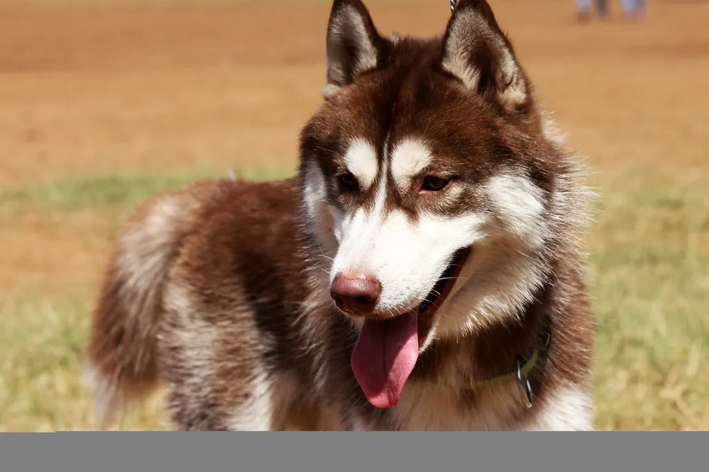

🐺 Husky sibérien : caractère, éducation et besoins

Ses origines
Le husky sibérien vient du nord-est de la Sibérie, où le peuple tchouktche l'utilisait pour tirer des traîneaux sur de longues distances. Il s'est fait connaître en Alaska au début du XXe siècle.
Son caractère
Le husky est généralement amical avec tout le monde, y compris les inconnus : ce n'est pas un chien de garde. Indépendant, il a été sélectionné pour courir longtemps en équipe, et il aime la compagnie des autres chiens.
Ses besoins
Ses besoins d'exercice sont très élevés : longues sorties, course, canicross ou cani-VTT par temps frais. Un husky qui s'ennuie peut creuser, détruire, hurler ou chercher à fuguer. Il supporte mal la chaleur : adaptez les efforts en été.
L'éducation
Intelligent mais indépendant, il demande de la patience et des récompenses très motivantes. Le rappel est souvent difficile : beaucoup de huskies se promènent en laisse ou en longe dans les zones non sécurisées. Son instinct de chasse impose la prudence avec les chats et les petits animaux.
L'entretien
Il perd énormément de poils pendant les mues : brossages très fréquents à ces périodes. Ne le tondez pas : son pelage le protège aussi de la chaleur et du soleil.
Sa santé : points d'attention
Certaines maladies des yeux sont connues dans la race. Demandez à l'éleveur les dépistages réalisés sur les parents (yeux, hanches) et faites-le suivre par votre vétérinaire.
Au quotidien
Une longue sortie sportive (aux heures fraîches), des jeux de flair, des jouets à mâcher et la compagnie d'autres chiens si possible. Vérifiez régulièrement les clôtures : c'est un champion de l'évasion.
Avec les enfants et les autres animaux
Joueur et sociable, il est souvent à l'aise avec les enfants, sous surveillance. Avec les chats et les petits animaux, son instinct de chasse demande beaucoup de prudence.
Est-ce la race pour vous ?
- ✅ Oui si : Vous êtes sportif, vous avez un jardin bien clos et vous aimez les chiens indépendants.
- ❌ Plutôt non si : Vous cherchez un chien obéissant en liberté, vous vivez sans extérieur ou dans une région très chaude.
Chaque animal est unique : le caractère dépend aussi de son histoire, de sa socialisation et de son éducation. Pensez à l'adoption en refuge ou en association de race, et passez du temps avec des chiens ou des chats de la race avant de vous décider.
Le matériel utile
Confortable et sans pression sur la gorge, idéal pour apprendre la marche en laisse.
Questions fréquentes
Un husky peut-il vivre en appartement ?
C'est très difficile : il a besoin de beaucoup d'exercice chaque jour. C'est le manque d'activité, plus que la taille du logement, qui pose problème.
Pourquoi hurle-t-il ?
Le husky « chante » volontiers, notamment quand il s'ennuie ou est seul. Activité, compagnie et apprentissage progressif de la solitude aident.
Peut-on le lâcher en balade ?
Rarement en toute sécurité : son instinct de course est fort. Préférez une longe ou un terrain clos.
Pour aller plus loin : le rappel · la marche en laisse · le guide du chien · toutes nos fiches races · quel animal pour moi ?